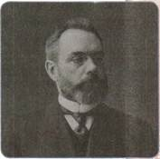
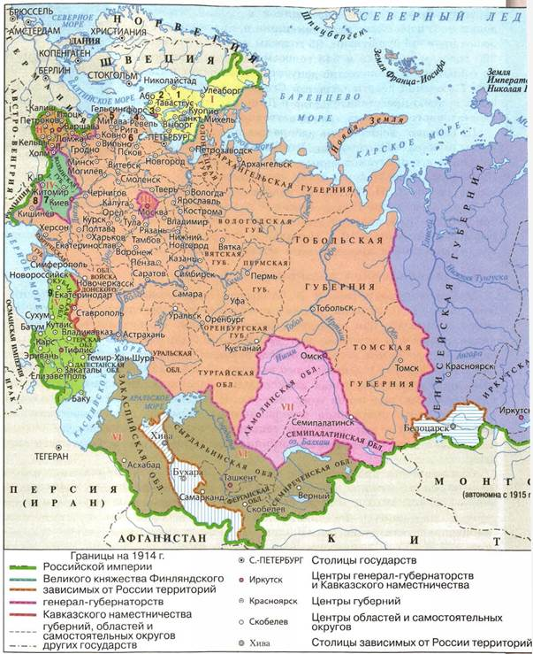
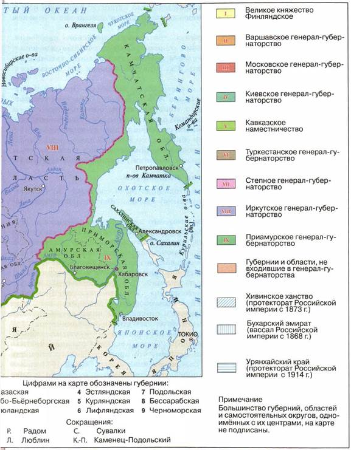
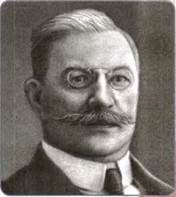

Почему после завершения революции 1905—1907 гг. не удалось преодолеть раскол в российском обществе?
1. Новый избирательный закон. III Государственная дума
3 июня 1907 г. одновременно с роспуском II Думы был обнародован новый избирательный закон. Он сохранил деление избирателей на 4 курии — землевладельцев, городских обывателей, крестьян и рабочих. Но городские курии были разделены на два разряда, отделявшие крупных предпринимателей и купцов от основной массы городского населения. Закон коренным образом перераспределял число выборщиков в пользу землевладельцев. Теперь один голос помещика приравняли к 4 голосам крупной буржуазии, 65 голосам мелкой буржуазии, 260 голосам крестьян и 543 голосам рабочих. Значительно сокращалось количество депутатов от Кавказа и Польши. Население десяти областей Средней Азии и Сибири было лишено представительства в Думе как не достигшее «достаточного развития гражданственности».

А. И. Гучков
III Государственная дума избиралась по новому закону.
Эсеры выборы бойкотировали. Это была первая Дума, отработавшая все предусмотренные пять лет. Председателями III Государственной думы стали октябристы — Н. А. Хомяков, затем А. И. Гучков и, наконец, М. В. Родзянко.
Первое заседание Государственной думы третьего созыва состоялось 1 ноября 1907 г. Правительство смогло наконец начать обсуждение в ней аграрной реформы. 14 июня 1910 г. Николай II утвердил принятый Думой законопроект, «касающийся крестьянского землевладения» (см. § 31).
2. Национальная политика
Основной целью реформ П. А. Столыпин считал создание «великой России». Этот лозунг подразумевал, помимо всего прочего, целостность и единство Российской империи при главенстве русской нации. Правительство стремилось ликвидировать те немногие уступки, которые были вырваны национальными окраинами во время революции. Эта позиция находила отклик у части российского общества и депутатского корпуса. Осенью 1909 г. в Государственной думе была создана «русская национальная фракция». Её члены ставили перед собой цель дать отпор тому, что они называли «инородческим засильем», и не допустить повторения революционных событий, противопоставить националистическое мировоззрение социалистическому. Представители умеренно правых сил поддерживали инициативы Столыпина в Государственной думе.
Озабоченность правительства вызывало положение в Финляндии, власти которой, по его мнению, проводили курс, ведущий почти к её полному обособлению. Весной 1910 г. в Думу был внесён законопроект «О порядке издания законов, касающихся Финляндии». В нём определялось, что общеимперские законы, затрагивающие Финляндию, должны приниматься только Государственной думой и Государственным советом, мнение же финляндского сената и сейма могло не учитываться. Перечень вопросов, отнесённых к общеимперскому законодательству, включал основы государственного строя Финляндии, охрану порядка и суд, школьное дело, законодательство о партиях и печати и т. д. Законопроект фактически ликвидировал финляндскую автономию.
Усилилась антипольская направленность политики правительства. Новый избирательный закон резко, почти в 3 раза, сократил польское представительство в Думе. В 1907—1908 гг. были закрыты все национальные культурно-просветительские общества и учреждения. Антипольскую направленность имел и закон о земстве в западных губерниях. Столыпин предложил ввести земства только в тех губерниях края, где проживало значительное число русского (украинского) населения. Вопреки общероссийскому, закон разделил избирателей западных губерний на национальные курии — польскую и русскую. Так было ограничено представительство поляков-помещиков в земском самоуправлении.


Россия в начале XX в.
Правительство продолжило политику притеснения еврейского населения. Вводились более жёсткие ограничения приёма евреев в учебные заведения. С августа 1908 г. число студентов-евреев в столичных высших учебных заведениях не должно было превышать 3%, в других городах вне черты оседлости — 5%, в черте — 10%.
Была развёрнута массированная антиеврейская кампания. Поводом послужило убийство в Киеве русского мальчика А. Ющинского. Следствие усмотрело в преступлении следы ритуального убийства, якобы совершённого евреем М. Бейлисом. Черносотенные организации подняли шум, взбудораживший всю Россию. В ноябре 1913 г. суд присяжных, состоявший преимущественно из крестьян, признал ритуальный характер убийства, но вынес Бейлису оправдательный приговор. Провал суда, организованного Министерством юстиции, стал, по признанию чиновника Департамента полиции, «полицейской Цусимой».
3. Общество и власть после революции
Отношение общества к политике Столыпина было сложным. Антиправительственные настроения были по-прежнему сильны. Значительная часть населения не доверяла власти.
Крестьяне оказались разочарованы тем, что им не отдали помещичьи земли, а предлагали ехать за землёй невесть куда. Идея «чёрного передела» жила в крестьянском сознании. Дворянство видело в Столыпине лишь разрушителя вековых устоев и узурпатора власти. Помещикам нужен был успокоитель, в реформаторе они не нуждались. Либеральная интеллигенция не могла простить главе правительства военно-полевых судов, приверженности к самодержавным формам правления, антисемитских настроений. Для революционных партий он навсегда остался «душителем революции», «вешателем», реакционером.
Единственной силой, объявившей о безоговорочной поддержке всех столыпинских начинаний, были октябристы и стоявшие за ними патриотически настроенные русская буржуазия, часть интеллигенции и чиновничества. Эта социальная группа одобряла как наведение порядка самыми крутыми мерами, так и осторожные, продуманные реформы. Однако вскоре Столыпин лишился поддержки октябристов, недовольных тем, что премьер-министр слишком часто пытался действовать в обход Государственной думы. Весной 1911 г. лидер партии А. И. Гучков открыто порвал со Столыпиным и сложил с себя полномочия председателя Государственной думы. Премьер-министра отныне безоговорочно поддерживала только фракция националистов, но она не имела большого политического влияния.
Курс Столыпина перестал поддерживать Николай II. И не потому, что царь боялся остаться в тени на фоне яркой фигуры премьер-министра, как считали многие. Николай II чувствовал, что, несмотря на искреннее убеждение Столыпина в необходимости самодержавия (главного, по его мнению, инструмента преобразований), в России, осуществившей реформы, самодержавная власть станет ненужной. Испуг революционных лет прошёл, и император всё больше прислушивался к мнению крайне правых сил, которые стремились вернуть Россию к неограниченному самодержавию.
Все ждали отставки Столыпина. Но 1 сентября 1911 г. в Киевском оперном театре в присутствии императора П. А. Столыпин был смертельно ранен эсером Д. Г. Богровым. Убийца был связан с революционной организацией и в то же время являлся агентом полиции.
Используя дополнительную литературу и Интернет, изучите обстоятельства гибели П. А. Столыпина. Предложите свою версию заказчиков его убийства.
4. Нарастание революционных настроений
Столыпину так и не удалось провести в жизнь многие из намеченных реформ. Они были отклонены Государственной думой или Государственным советом. Да и сам Столыпин считал административные и политические преобразования делом второстепенным, все его усилия сосредоточились на аграрной реформе.
Осенью 1910 г., когда стало ясно, что политических реформ в стране в ближайшее время не предвидится, оживилось оппозиционное движение. Поводом для начала массовых выступлений послужила смерть Л. Н. Толстого 7 ноября 1910 г. Впервые после 1905 г. в Петербурге, Москве и других городах прошли массовые демонстрации студентов и рабочих с требованием отменить смертную казнь, противником которой был великий русский писатель. Правительство предприняло ответные меры. В январе 1911 г. в высших учебных заведениях запретили какие бы то ни было собрания, что означало ликвидацию всех легальных студенческих организаций и вызвало новый взрыв студенческого недовольства. В знак протеста профессора Московского университета В. И. Вернадский, Н. Д. Зелинский, К. А. Тимирязев и ряд других во главе с ректором А. А. Мануйловым объявили о своей отставке.
В апреле 1912 г. Россию потрясли трагические события, разыгравшиеся в Восточной Сибири, на Ленских золотых приисках. В ответ на начавшиеся там волнения рабочих были вызваны войска. В столкновениях с армией было убито 270 человек и ранено 250. На заседании Думы при обсуждении этой трагедии министр внутренних дел А. А. Макаров заявил: «Когда, потерявши рассудок, под влиянием злостной агитации, толпа набрасывается на войска, тогда войску не остаётся ничего делать, как стрелять. Так было и так будет впредь». Эти слова немедленно разнеслись по всей стране. Ответом стали массовые стачки протеста, в которых приняли участие до 300 тыс. человек. Вслед за ними прокатилась волна первомайских демонстраций, собравших под красные знамёна более 400 тыс. рабочих. Были зафиксированы отдельные выступления в армии (восстание сапёров в Ташкенте) и на флоте. До лета 1914 г. революционное движение продолжало нарастать.
5. IV Государственная дума
В 1912 г. завершила свою деятельность III Государственная дума. IV Государственная дума открылась 15 ноября 1912 г. По своему партийному составу она почти не отличалась от III Думы. Тем не менее по настроению IV Дума была более оппозиционной. Лидер кадетов П. Н. Милюков строил планы создания в Думе «прогрессивного блока» из депутатов, приверженных умеренным реформам, для оказания давления на правительство.

П. Н. Милюков
ПОДВЕДЁМ ИТОГИ
Реформаторский путь, предложенный Столыпиным, не был реализован в полной мере. Раскол власти и общества преодолеть не удалось.
Вопросы и задания для работы с текстом параграфа
1. Почему 3 июня 1907 г. был изменён избирательный закон? В чём главное отличие III Государственной думы от предыдущих? 2. Какие изменения произошли в национальной политике в 1907—1914 гг.? Чем они были вызваны? 3. Каких существенных элементов автономии лишилась Финляндия? Как это было связано с укреплением единства Российской империи? 4. Каково было отношение общества к реформам П. А. Столыпина? 5. Перечислите факты, приведённые в параграфе, которые указывают на нарастание революционных настроений в обществе.
Изучаем документ
ИЗ РАБОТЫ СОВРЕМЕННЫХ ИСТОРИКОВ А. Н. БОХАНОВА И М. М. ГОРИНОВА «ИСТОРИЯ РОССИИ С ДРЕВНЕЙШИХ ВРЕМЁН ДО КОНЦА XX ВЕКА»
Третья Государственная дума... была созвана 1 ноября 1907 г., и её состав оказался несравненно более консервативным, чем у предшественников. Численность депутатского корпуса была законодательно сокращена. Из 442 мест 146 получили правые, 155 — октябристы и близкие им группы, 108 — кадеты и сочувствующие, 13 — трудовики и 20 — социал-демократы. Думским центром оказалась партия «Союз 17 октября», а председателем был избран октябрист Н. А. Хомяков. В марте 1910 г. его сменил лидер партии А. И. Гучков, а через год главой парламента был избран октябрист М. В. Родзянко.
Сравните партийный состав III Государственной думы с составом Государственной думы I и II созывов, сделайте выводы.
Думаем, сравниваем, размышляем
1. «Нельзя составлять закон, исключительно имея в виду слабых и немощных. Нет, в мировой борьбе, в соревновании народов почётное место могут занять только те из них, которые достигнут напряжения своей материальной и нравственной мощи», — заявил П. А. Столыпин на заседании Государственной думы. Оцените с этих позиций его деятельность. Подумайте о цене предложенных им реформ. 2. По мнению лидера кадетов П. Н. Милюкова, «по самой идее Третьей Думы в ней не должна была предполагаться наличность оппозиции». Объясните смысл этого утверждения. Приведите доказательства в его поддержку или опровержение. Нужна ли парламентская оппозиция правительству в принципе? Своё мнение обоснуйте. 3. Подготовьте презентацию, демонстрирующую сходства и различия политических партий, представленных в III или IV Государственной думе.
4. Используя дополнительную литературу и Интернет, подготовьте сообщение о взглядах и деятельности лидера одной из российских политических партий начала XX в.